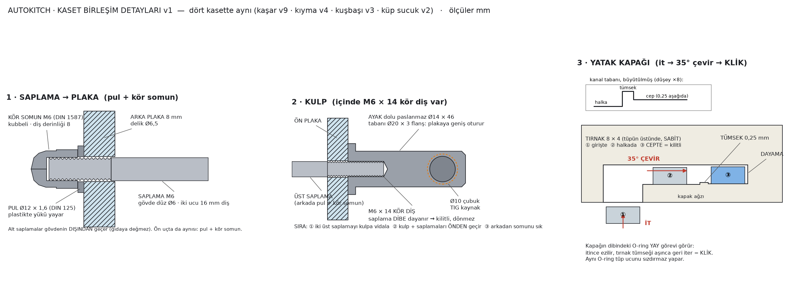

Dozaj modülünün tamamı — kabin, yalıtım, 6 kaset yuvası, 12 tahrik, soğutma ve pano. Modelde ön kapak açık gösteriliyor, yoksa kasetler görünmezdi. Üstüne gel — adı ve ölçüsü çıkar. Kasete çift tıkla — o kasetin kendi modeli, AR'si ve montaj animasyonu açılır. Modelin altındaki çubuktan kesit alabilir (X/Y/Z) ve iki noktaya tıklayıp ölçü çıkarabilirsin.
sayfadan çıkmadan açılır: ürünü seç, makine çalışsın; sağdaki panelde hangi kod satırının çalıştığı, hangi motorun yandığı ve eksen değerleri görünür. Kasetin helezonu, karıştırıcısı ve pompası gerçekten döner; dozlanan ürün pidenin üstünde birikir.
sürükle: döndür · tekerlek: yakınlaştır · üstüne gel: birim · çift tıkla: aç · alttan kesit + ölçü
Aynı anda besleme rotoru ters yönde yavaş döner (≈ 4 dev/dk): iki sıyırıcı lama hazne duvarını sıyırıp ürünü helezon boğazına iter.
Ürün çıkış tüpünden aşağı bakan ağza iner. Kuşbaşı ve küp sucukta tüp tabanındaki 6 mm eşik + tıkaç akışı sürekli yapar.
Pide dolarken dıştan içe yürür; dağılımı her ürün için ayrı çözülmüş bir hareket yasası belirler.
Kaset boşalınca eleman öndeki kulptan çeker, doldurur, geri sürer. Kaset kapaksız: +3 °C kapalı kabinin içinde.
2 · Kasetler
Yuva
Ölçü
Hesap (doluluk varsayımıyla)
Durum
HARÇ 1 · lahmacun
280 × 360 × 325
hesabı yok — yayma sorunu: 110 g harç 1,8 mm'lik katman demek, meme tek başına pideyi kaplamıyor
BAŞLANMADI
HARÇ 2 · pizza sosu
280 × 360 × 325
aynı sorun; karar: yap / satın al
BAŞLANMADI
KIYMA · v5
140 × 360 × 325
vida Ø68, hatve 36→48,5 · 68 g/tur · 160 g = 2,4 tur · 14 dev/dk · 6,4 kg = %60 dolu
MODEL TAM İŞLEV EKSİK
KUŞBAŞI · v4
140 × 360 × 325
vida Ø68, hatve 40→50,5 · 68,2 g/tur · 145 g = 2,12 tur · 13 dev/dk · 5,8 kg = %68 dolu · küp 10 mm
TAM
KAŞAR KABI · v10
280 × 360 × 325
vida Ø40, hatve sürekli 22→30,17 (11,75 tur) · 7,9 g/tur · 42 dev/dk · 8,8 kg = %85 dolu
TAM
KÜP SUCUK · v3
140 × 360 × 325
kuşbaşı kasetinin birebir aynısı (55/55 parça) · 53,2 g/tur · 70 g = 1,32 tur · 8 dev/dk · 2,8 kg = %44 dolu · küp 8 mm
TAM
"MODEL TAM" = 55–57 parçanın hepsi gerçek katı, çakışma yok, üretim STEP'i basılı. "İŞLEV EKSİK" = kaset dozu doğru veriyor ama işi bitmiyor (aşağıda T1).
3 · HARÇ / SOS ÜNİTESİ v2 — VİDA YOK
Düzeltmev1'de kaşar gövdesini kopyalayıp içine helezon koymuştum — yanlıştı. Sıvı ve macun vidayla dozlanmaz; konuşulan sistem hortum pompasıydı (Atosa'da görülen bidon + hortum düzeni). v2'de hiçbir yerinde vida yok.Ürün yoluHAZNE (kasetin kendi kâsesi) → dip rakoru (en alçak nokta, içeride ürün kalmaz) → emiş hortumu → peristaltik pompa (rotor + 3 makara hortumu ezer) → basma hortumu → borulu nozzle Ø16 + 1/2" duckbill valf → pidenin 40 mm üstü. Ürün yalnız hortumun içinde; pompanın hiçbir parçası ürüne değmiyor, yıkanması gerekmiyor.Mil görevlerimodüldeki 12 tahrik aynen duruyor, yeni motor gerekmiyor: üst mil pompa rotorunu, alt mil hazne karıştırıcısını (3 düz palet) döndürüyor. Karıştırıcı ürünü itmiyor, yalnız sos beklerken ayrışmasını önlüyor.Debi hesabıhortum iç Ø12,7 (1/2" standart peristaltik) = 127 mm² · rotor Ø60 · yatak yayı ~190 mm → ~24 mL/tur [V: kesit × yatak yayı, makara kaybı %5–10]. Doz 110 g @ 1,05 = 105 mL → 4,4 tur → 10 saniyede 26 dev/dk. Mevcut tahrik 42 dev/dk'ya kadar veriyor — rahat sığıyor.Nozzle10,5 mL/s · iç Ø16 = 201 mm² → 52 mm/s. Hortumdan çıkınca yavaşlamıyor, damla asmıyor. Ucunda 1/2" silikon duckbill valf: basınçla açılır, doz bitince kendi elastikliğiyle kapanır.Sarf malzemesiperistaltik hortum ~500 saat ömürlü [V katalog] → günde 2 saat çalışmada ~8 ay. Pompa kapağı şeffaf, hortumun durumu dışarıdan görülüyor. Elemanın değiştireceği tek parça bu.Kapasite UYARISIpafta HAT v19'da kaset başına 21,6 kg yazıyor. 21,6 / 1,05 = 20,6 L = kabın ağzına kadar dolu demek. Gerçekçi %85 dolulukla 18,4 kg; eksik 3,2 kg ya dozdan ya gün içi bir ek doldurmadan çıkacak.Açık kalanharç pideye ip gibi iner, kendiliğinden yayılmaz. Yayma (spiral yol + yayıcı) ayrı bir iş.Üretim dosyaları62 parça STEP + STL, MONTAJ.step, BOM (33 kalem) — arastirma/3_TOPPING/harc_kaseti_v2/ · 3B + AR + montaj animasyonu (28 adım): harç ünitesi sayfası
4 · DÖNER TABLA — TAM ÜRETİM MODELİ
Önceki hâliv9'a kadar tabla 9 adet yer tutucu bloktu; parçaların hiçbiri birbirine bağlanmıyordu. v10'da gerçek mekanizma kuruldu: 188 parça, BOM 66 kalem.X ekseni · kayış tahrikli tek arabasağ uçtaki sabit NEMA23 (x 1735) → GT3 20 diş kasnak (çevre tam 60,00 mm/tur) → açık uçlu 9 mm kayış sol uçtaki avaraya gidip döner, iki ucu arabanın altındaki kola kelepçelenir. Araba iki HGR15 rayda 4 blokla gezer. Gergi sol uçtaki avara braketinde (yuva + itme vidası) — ağızdan elle erişilir. Kayış z −360'ta, yani tepsi gölgesinin dışında: ürün düzleminin altında tahrik elemanı yok.Dönüş ekseni · eş eksenli doğrudan tahrikPancake NEMA23 (57 × 57 × 41) araba plakasının altına flanşlı, ekseni tabla ekseniyle aynı. Redüktör yok, kayış yok (i = 1). Gereken tork 0,169 N·m, motor ~0,9 N·m → ~5 kat pay. Tabla ince kesit döner yatak (slewing ring) üzerinde — Ø340 konsol tablanın devirme momentini o alıyor. Motor → tahrik lokması → 2 × Ø8 pim → göbek. Rijit kaplin yok: tabla düşeyde ayrılabiliyor, mil yan yük almıyor.Ayar bileziğiyatakla göbek arasında 7,5 mm torna halka. Ray + blok + yatak katalog toleransının tamamı tek ve ucuz bir parçada toplanıyor; 2–14 mm arasında yeniden işlenebiliyor. Önceki şemalarda yedek dikey boşluk sıfırdı.Neden HGR20 değil HGR15HGR15 ile araba plakasının altında 44,0 mm açılıyor ve 41 mm'lik pancake motor oraya giriyor. HGR20 ile motor sığmıyordu.Taşıyıcı1,5 mm saca lineer ray bağlanmaz: mekanizma teknesi (3 mm, kenarları kıvrık, %1,5 eğimli, Ø25 tahliyeli) + iki ray kirişi (60 × 16) + kayış kirişi + 6 bağlama laması. Kaynaktan sonra üç üst yüzey tek bağlamada frezeleniyor (düzlemlik 0,1 mm/m — HGR15 şartı).HijyenSıyırıcı apron tepsinin ayak izini birebir örtüyor, dökülen kırıntı raylara ulaşamıyor. Ray örtü çatıları arabanın olmadığı yerde rayı kapatıyor. Kırıntı çekmecesi önden çekilip yıkanıyor. Gıdaya bakan her cıvata başı havşa ya da kubbe — yukarı bakan alyan cebi yok.Sensörler ve kablox home (istasyon x 1520) + iki limit, hepsi M12 IP69K endüktif; tabla home sensörü araba plakasının üstünde, bayrağı ayar bileziğinde — robot tepsiyi hep aynı açıda bulmalı. Dönüş motoru arabayla gezdiği için enerji zinciri zorunlu (PUR kılıflı sürükleme kablosu, PVC değil). İki uçta poliüretan tampon — araba plakasına çarpıyor, bloklara değil.Çevrimaltı dozun hepsi 71,0 s → 51 tepsi/h (hat hedefi 49–55 içinde). Tipik kaşarlı pide tek doz 13,7 s → 262 tepsi/h — tabla tipik üründe darboğaz değil. İstasyon sağda (x 1520): dozaj zaten sağda bitiyor, tek dozlu üründe 2067 mm yerine 628 mm yol kalıyor.Bağlantı elemanları≈180 adet, 15 tip, tümü A4/A2 paslanmaz. Ray 54 × M4 havşa · blok 16 × M4 · yatak 8 × M5 · ayar bileziği 6 × M5 · göbek 3 × M8 saplama + kelebek somun + 2 konum pimi (aletsiz sökülür) · dönüş motoru 4 × M5 · kayış kolu 4 × M8 + 2 pim · kelepçe 4 × M5 + 4 × M4 · X motoru + kaide · avara + gergi · apron 8 · çatı 24 · sensör 12 · zincir 18 · tampon 2 takım.Açık kalanlar — dürüstçe(1) Tepsi merkezleme: 3 konik pim tepsiye 3 çukur açılmasını gerektiriyor, bu tepsi şartnamesini değiştirir — senin kararın. (2) Yük hücresi 100 mm'ye sığmıyor: makine koyduğu gramı ölçmüyor, helezon turundan hesaplıyor. (3) Tepsi var/yok kontrolü çözülmedi — boş tablaya doz dökülmesini engelleyen fiziksel kilit yok. (4) Modülün taşıyıcı şasisi modelde hiç yok (y < 190'da yalnız 1,5 mm sac); 1600 mm ray 0,1 mm/m düzlemlik istiyor, teknenin altına enine taşıyıcı şart. (5) Katalog ölçülerinin hiçbiri teklifli değil — HGR15 paslanmaz, döner yatak, GT3 kasnak, pancake tork eğrisi sipariş öncesi teyit edilecek.
5 · Modül tasarımı
Derinlik dizilimi · v10ÖN NİŞ 84 · ön kapak 20 · kulp + tüp boşluğu 96 · KASET 325 · kavrama + yaylı soket 40 · yalıtımlı bölme 65 · KURU MAKİNE BÖLMESİ 200 = 830 mm. v1'de kuru bölme 320 yazılmıştı ama tahrik zinciri 178 mm'de bitiyordu: motorun arkasında 142 mm boşluk duruyordu. Kuru bölme ölçüsüne indirildi, açılan yer ÖNE geçti — kaset geriye gitti, çıkış ağzı modül ön yüzünden 10–55 mm yerine 130–175 mm içeride. Ön niş yalıtımın DIŞINDA, soğutulan hacme girmiyor. Kulp boşluğu da 60→96 oldu: çıkış tüpü ön yüzden 84 mm taşıyor, 60 mm'de ağız ön kapağın içine giriyordu (çakışma taraması yakaladı).Nozzle → yalıtım deliği · v9kaset boruları yalıtımın altına kadar sarkıyordu (y 160'a, 90 mm fazladan). Kemal: "o yuvarlak parça sadece yalıtımın üst kısmına kadar gelsin, orada kes; yalıtımın içine aynı çapta yuvarlak boşluk aç, kaset takılınca ucu oraya denk gelsin, malzeme aşağı aksın — bu sayede etrafı kapanır, yalıtımda sadece bir delik olur."
Boru artık y 250'de, yani yalıtımın üst yüzünde bitiyor. Yalıtım ve iç kabuktaki uzun yarık kalktı; yerine her yuvada tek yuvarlak delik (boru dışı + 2 mm) var. Deliğin içinde dozaj kovanı: iç kabuğa kaynaklı paslanmaz boru, yalıtımı baştan başa geçip pidenin 40 mm üstünde bitiyor. Kaset çekilince boru kovanın üstünde kalıyor, hiçbir şeye takılmıyor. Yarık yalnız taban rayında kaldı — boru y 250–260 arasında rayın içinden geçiyor, çekme yolu açık olmalı.Silinen iki parça · v9damlama teknesi (yalıtımın altındaki gri parça) ve ağız çerçevesi (ön çerçeve sacı v7'de kalkınca havada kalan sac) silindi. Damlamayı artık dozaj kovanı ve harç ünitesindeki duckbill valf kesiyor.Ön yüz AÇIK · v7dış kabuğun ön çerçeve sacı kalktı (Kemal: "en öndeki metal anlamsız parçayı kaldır — sadece sağ sol arka üst alt"). O sac zaten üç büyük açıklıkla delinmişti ve hiçbir yükü taşımıyordu. Dış kabuk artık beş yüz: taban · tavan · iki yan · arka. Ön yüzü kaset kapağı, robot ağzı çerçevesi ve teknik bant kapağı kapatıyor.Soğuk / kuru ayrımımotorlar soğuk hücrenin DIŞINDA, PU bölmenin arkasında. Üstlerinde yoğuşma olmuyor ve ısıları soğutma yüküne girmiyor. Mil bölmeden yataklı-keçeli kovanla geçiyor.12 tahrik6 kaset × 2 mil. Her mile NEMA23 kapalı çevrim step + eş eksenli planet redüktör i = 10. Sıkışma sınırı 3 N·m, tasarım 6 N·m; motorda 0.67 N·m gerekiyor, NEMA23 1,2 N·m veriyor. En hızlı mil (kaşar 42 dev/dk) motorda 420 dev/dk.Neden sonsuz vida değilNMRV030 sonsuz vidada giriş ekseni çıkışa DİKTİR, motor yana taşar; iki motor 131 mm ister ve 140'lık kasetin arkasında komşuya girerdi. Planet redüktör eş eksenli: motor mille aynı hizada arkaya diziliyor.Yuva boşluğu · PAFTA DÜZELTMESİHAT v19'da yuva genişlikleri kaset genişliğine BİREBİR eşitti ve yuvalar bitişikti — kılavuza ve geçme boşluğuna yer yoktu, kaset fiziksel olarak girmezdi. Yuvalar yeniden hesaplandı: kaset + 2 mm boşluk, aralarında 3 mm ayırıcı lama, blok hücrenin ortasına alındı.Meme geçişi · v3 DÜZELTMESİkasetin memesi soğuk hücrenin TABANINDAN geçiyor. v2'de yarık yalnız ağız boyundaydı (42 mm) ve kaset yuvadan ÇIKMIYORDU — öne çekilince meme 6 mm sonra iç kabuğun tabanına çarpıyordu. Yarık artık hücrenin ön sınırına kadar açık; meme 28 mm sonra o sınırı geçiyor ve hücrenin dışında serbest kalıyor.Çıkış borusu · v5ayrı baca/huni parçası KALKTI (Kemal: "başka parça yok, direk kasetin kendi ucu pideye yaklaşıyor"). Kasetin kare ağzı yuvarlak boruya çevrildi ve kaset tabanının 100 mm altına uzatıldı; boru pidenin üst yüzüne 40 mm kala bitiyor. Çap köprüleme kuralından (boru çapı ≥ 3 × en büyük parça): kuşbaşı 10 mm küp → köşegen 17,3 → Ø52 · küp sucuk 8 mm → Ø42 · kaşar rende (lif 30 mm) → Ø52 · kıyma macun, köprüleme yok, çapı debi belirliyor: 16 mL/s → Ø32, ip gibi iner. Birleşim v2: boru tüpün dışında tüp çapıyla başlıyor, 22 mm konik daralıp kendi çapına iniyor — basamak yok. Kaşarda boru (Ø58) yatay tüpten (Ø50) bile kalındı; ürün zaten tüpün iç Ø44'ünden geçiyordu, kaşar borusu Ø44 oldu, dışı Ø50 = tüp dışı, tam hizalı. Sürümler: kaşar v14 · kıyma v9 · kuşbaşı v8 · küp sucuk v7 · harç v4 (boru ucu y 252 — iç kabuğun 1 mm üstünde, hiç yarık kalmıyor). Kaset artık masaya oturmuyor — boru ayak düzleminin altında; yatay konur ya da ayaklı sehpaya oturur. Taşıma tapası borunun ucuna geçen yuvarlak kapak oldu.Alt paket neden kalın70 mm: PU 60 (yalıtım hesabı buna dayanıyor, incelirse ısı kaçar) + iç kabuk 1 + kaset altı boşluk 10 + taban rayı 4. Boşluk v2'de 20'ydi, yarıya indirildi.Soğutmayük hesabı: duvar 26 + ürün 4 + kapak 25 + fan 24 = 78 W, emniyetli seçim 118 W. ⅕ HP hermetik grup +3 °C'de 250–350 W verir → yeterli. Soğutulan derinlik v2'de 445→425 mm (yalnız kulp boşluğu + kaset + kavrama). Evaporatör v1'de BEŞ KASETİN İÇİNE giriyordu (y'de 100, z'de 75, x'te 118–282 mm) — Kemal modelde gördü, ölçüldü, doğrulandı. v2'de sağ uca dikey alınmıştı ama orası kaset sırasının yanıydı, yer yiyordu. v3'te kasetlerin ARKASINA — kavrama bölmesine, millerin üstüne (y 488–610, cephe 1360 × 122 mm). Miller y 300–455 arasında, evaporatör hiçbirine değmiyor. v5: soğutma paketi KURU BÖLMEYE, motorların üstüne alındı (Kemal: "standart versiyonunu bul, motorların olduğu yere koy, yalıtıma boşluk aç"). Hücrenin içinde artık hiçbir soğutma parçası yok. Standart sınıf fanlı evaporatör (unit cooler) 400 × 180 × 190 soğuk havayı arka yalıtımdaki iki boşluktan veriyor: üstte üfleme, altta dönüş. Kavrama bölmesi plenum görevi görüyor, delikli perde havayı baştan sona yayıyor. Boşlukların ikisi de mil bandının (y 300–455) dışında. Ölçü VARSAYIM: yükümüz 118 W, katalogdaki en küçük unit cooler bile 300–500 W verir — kesin model seçilmedi. Hava kanalı da v1'de kasetin içindeydi (y 504–508, kaset üstü 620).Elektrik12 step sürücü (her mile bir) · aynı anda en çok 2 mil döndüğü için 24 V 154 W güç kaynağı · PLC panosu + 500 VA UPS teknik bantta, önden servis.Üretim dosyaları142 parça STEP + STL, TOPPING_MODUL_v10_MONTAJ.step, BOM.csv (32 kalem) — arastirma/3_TOPPING/topping_modul_v10/ · 135 parça (baca 6 adet kalktı)
4 · Kaset özellikleri
Ortak gövde 140kıyma = kuşbaşı = küp sucuk kasetinde gövde, iki uç plakası, kulp, yatak kapağı, saplamalar birebir aynı (hacimle doğrulanıyor). Alt mil ekseni 60, üst 164, tekne Ø72. Kaşar 280 sınıfı, ayrı gövde.KapakYOK (Kemal, 22 Eyl: TOPPING'de de yok). Yerine gövde ağzında içe 8 mm bükme dudak: kenar keskin kalmaz, ağız esnemez, elle tutulacak yer olur.Helezonhatve SÜREKLİ artıyor (basamaklı değil): kapasite öne doğru büyür, ürün yalnız arkadan değil boyunca çekilir. 4 segment, kare çubuğa dizili; bölünmemiş tek parça hâli de export ediliyor.Besleme rotoru3 göbek + 2 sıyırıcı lama 15 × 3 × 292, kaynaklı tek parça (vida/pim yok — çiğ ette aralık bakteri yuvası). Kıymada lama duvara 2,4 mm, kuşbaşı/sucukta 19 mm.Yatak kapağıbayonet: it → 35° çevir → klik. Tüpte 3 tırnak, kapakta giriş → halka → 0,25 mm tümsek → cep + dayama. İçindeki O-ring hem conta hem yay.Sızdırmazlıkgövde–plaka silikon conta · 2 tahrik göbeği + ön kovan muylusunda O-ring 18 × 2,5 · tüp faturasında O-ring · tüp vidası metal insert'e · ön kovanda Ø28,4 × 2 labirent.Kaset derinliği325 (dördü de aynı). Modül 830 → kasetin arkasında 305 mm: kavrama 40 + yalıtım 65 + kuru bölme 200 (mil ucu 40 + redüktör 60 + motor 76 + kablo payı 24). Kablolar motorun yanından çıkıyor.MalzemeDENEME parçası baskı (PETG / PA12). ÜRETİM: çiğ et teması 304 / 316 + POM-C talaşlı, Ra ≤ 0,8.Kontrolher kaset değişikliğinden sonra otomatik kontrol listesi: 148 madde, 4 kaset. KALDI varsa yayınlanmıyor.
5 · Teknik resim

Birleşim detayları v1 — saplama → plaka (pul + kör somun) · kulpun içi (M6 × 14 kör diş) · yatak kapağının klik kanalı
Huni ürünü tıkar mı (özellikle macun) — eğim ve yüzey hesaplanmadı
AÇIK
T1 (yayıcı) kararıyla birlikte çözülecek
8 · Sürüm geçmişi
22 Eyl · TABLA TAM ÜRETİM MODELİ — Kemal: "bu tabla nasıl xyz'de hareket ediyor, nasıl dönüyor kendi etrafında — bunu her şeyiyle üretime yönelik çiz, motoruna kadar vidasına kadar." 9 yer tutucu blok yerine 188 parçalık gerçek mekanizma: tekne + kiriş merdiveni + HGR15 + 4 blok + araba plakası + döner yatak + ayar bileziği + göbek + tabla + pancake motor + lokma + GT3 kayış zinciri + apron + çatı + çekmece + enerji zinciri + 5 sensör + tamponlar.
22 Eyl · NOZZLE YALITIM DELİĞİNE OTURDU + İKİ PARÇA SİLİNDİ — Kemal: "yuvarlak parçalar neden yalıtımdan da aşağıya gidip saçma sapan uzun kalıyor? Yalıtımın üst kısmında kes, yalıtıma aynı çapta delik aç · yalıtımın altındaki gri parçayı sil · ön yüzeyde havada uçan sacı da sil." Boru 90 mm kısaldı, uzun yarık yerine tek yuvarlak delik + dozaj kovanı geldi, iki parça silindi.
22 Eyl · DÖNER TABLA — Kemal: "şimdi altına Atosa gibi tabla yapacağız ama nasıl olacak? Her kasetin çıkış yerine denk gelecek, ona göre kendini ayarlayıp dönerken ilerleyecek." İki eksenli tabla eklendi (x arabası + Ø340 tabla, 35 dev/dk). Yasa kasetlerin akış modellerinden alındı, yeniden uydurulmadı.
22 Eyl · HARÇ/SOS v2 (VİDA YOK) + ÖN SAC KALKTI — Kemal: "ya niye vidalı yaptın? Sosla lahmacun harcını dedik ya, borulu nozzle olacak diye · en öndeki metal anlamsız parçayı da kaldır, sadece sağ sol arka üst alt." Harç ünitesi hortum pompasına çevrildi (hazne → rakor → emiş → peristaltik pompa → basma → borulu nozzle Ø16 + duckbill). Dış kabuk beş yüze indi.
22 Eyl · HARÇ/SOS KASETİ + BORU BİRLEŞİMİ — Kemal: "aşağı inen boru çapının dışı yataydaki boru çapıyla aynı değil, birleşim düzgün olsun · şu harç kasetleri ile sos aynı şey aslında, bu ikisinin nasıl olacağını tam modelle, nozzle falan da yap." Boru artık tüp çapıyla başlayıp konik daralıyor. Harç/sos kaseti (harc_cad_v1) modellendi ve iki HARÇ yuvasına girdi — gerçek model sayısı 5'ten 7'ye çıktı (%15).
22 Eyl · MODÜL v5 + KASET BORULARI — Kemal: "o parçanın standart versiyonunu bul, motorların olduğu yere koy, içeriye soğuğu verecek şekilde yalıtıma boşluk aç · kasetlerden kare çıkış yapmışsın, yuvarlak yap, çapını hesapla, alta doğru uzat · başka parça yok, direk kasetin kendi ucu pideye yaklaşıyor." Soğutma kuru bölmeye geçti, hücrenin içi tamamen boşaldı. Baca parçası kalktı; kasetlerin ağzı yuvarlak boru oldu ve pideye 40 mm kala iniyor (kaşar v11 · kıyma v6 · kuşbaşı v5 · küp sucuk v4).
22 Eyl · MODÜL v4 — Kemal: "kasetlerin arkasındaki uzun parça ne? İçeriye havayı vermiyor mu, kesikler açılıyor sacda, standardı bu değil mi? Birde nozzle kısımlarını anlamadım, dolu parçalar var." Evaporatör delikli sac perdenin arkasına alındı (plenum + menfez). Ve baca kapalıymış: iç boşluk üst yüzeyin 3 mm altında bitiyordu, ürünün gireceği delik yoktu — baştan başa açıldı, iki kademeli oldu (üstte geniş ağız, altta meme ölçüsünde dar baca).
22 Eyl · MODÜL v3 — Kemal: "şu sağdaki şeyi arka tarafa al · nozzle uzun olsun, pideyle arasındaki doğru mesafe ayarlansın · alt kısım neden bu kadar kalın." Evaporatör kasetlerin arkasına geçti. Huni, pide üstüne 40 mm kala biten bacaya dönüştü (düşme 146 → 40). Alt paket 80 → 70 mm. Ve ölçerken çıkan gerçek hata: meme yarığı kısa olduğu için kaset yuvadan çıkmıyordu — yarık hücre ön sınırına kadar açıldı.
22 Eyl · MODÜL v2 — Kemal: "kasetleri geri it, arkada boşluk olmasın; sadece kasetlerin olduğu kısım soğutuculu; kablolar motorun yanından gider." Kuru bölme 320→200, ön niş 84 açıldı, çıkış ağzı 120 mm içeri geldi. Evaporatör ve hava kanalı kasetlerin içinden çıkarıldı. Meme yarığı artık kasetin kendi ağız ölçüsünden okunuyor — v1'de yarık z −85…−200'de, ağız −54,5…−10,5'teydi, ürün yarığa denk gelmiyordu. Çakışma taramasına kasetler eklendi: v1 yalnız modülün kendi 142 parçasını tarıyordu, kaset↔modül çakışması hiç taranmamıştı.
22 Eyl · MODÜL v1 — TOPPING kabin + yalıtım + 6 yuva + 12 tahrik + soğutma + pano gerçek üretim modeli oldu (topping_cad_v1, 142 parça). Kaset 80 mm içeri alındı, yuvalara 2 mm boşluk + 3 mm ayırıcı eklendi.
22 Eyl · KAPAK YOK — kaşar v10 · kıyma v5 · kuşbaşı v4 · küp sucuk v3: kapak kalktı, ağız dudağı geldi; rotor kaynaklı tek parça; ön kovanda labirent. Kontrol 148/148
22 Eyl · BİRLEŞİM DETAYLARI — dişli saplama + pul + kör somun, kaynaklı kulp, klikli bayonet, contalar, M4 insert
22 Eyl · ORTAK GÖVDE 140 — üç kaset aynı hazne; küp sucuk kuşbaşı kasetinin aynısı
21 Eyl — kaşar kabı v8: sürekli hatveli kanat tam yüzeyden, konik mil kökü
5 Eyl ve öncesi (v24–v27): Picnic tipi kap, çatal + L raf — terk edildi
AUTOKITCH · HAT · Yol C canlı tasarım defteri · model: hat_montaj_v2.py + kaset üreteçleri · 22 Eyl 2026